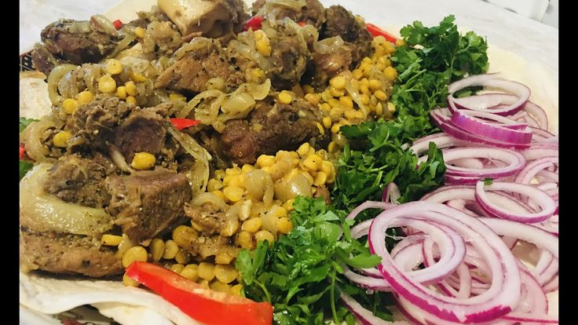

Home
|
Add Recipe
|
Recipe List
Do Pyaza

Ingredients
Ingredient
Amount
Unit
Meat (Beef or Mutton)
1
kg
Onions (2 sliced + 2 chopped)
4
pieces
Tomatoes
2
pieces
Garlic
2
cloves
Turmeric
1
tsp
Garam Masala
1
tsp
Salt & Pepper
To
taste
Oil
4
tbsp
Cooking Instructions
Sauté chopped onions in oil until golden brown. Add garlic and meat.
Add tomatoes and all spices. Cook until meat is tender.
In a separate pan, fry sliced onions until golden and crispy.
Mix the fried onions into the curry just before serving.
Serve hot with rice or naan.
← Back to Recipe List